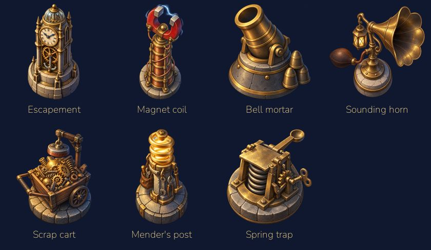

Rare towers
Seven rare towers, from the Escapement to the Mender's post: what they do, costs, unlock waves and final forms.
On this page
Each rare tower answers a particular kind of wind-up or the long haul of a deep run. No more than four can stand on the field at once, so choose them carefully. They open between waves 70 and 110.
| Tower | Family | Cost | Damage | Strikes per second | Reach | Opens at best wave |
|---|---|---|---|---|---|---|
| Escapement | Time | 140 | 20 | 1.2 | 2.4 | 70 |
| Magnet coil | Weight | 150 | 14 | 0.8 | 2.3 | 75 |
| Bell mortar | Bell | 170 | 48 | 0.3 | 3.6 | 80 |
| Sounding horn | Air | 130 | none | 0.25 | 2.2 | 90 |
| Spring trap | Spring | 135 | 12 | 0.25 | 1.6 | 95 |
| Scrap cart | Oil | 120 | none | n/a | 1.8 | 100 |
| Mender's post | Time | 160 | none | 0.2 | 1.0 | 110 |
Escapement
Every third strike stops its wind-up dead for a moment. It cannot reach fliers.
- Anchor: every second strike stops its wind-up.
- Verge: its stopping strike catches everything near the wind-up too.
Magnet coil
Pulls the plates off what it strikes, so it has no casing for a while and Weight towers hit it harder. It cannot reach fliers. It pairs well with the Weight-drop against Platebacks.
- Lodestone: plates stay off twice as long.
- Arc Coil: each strike arcs to three wind-ups nearby and strips them too.
Bell mortar
Lobs heavy bell-shells a long way into the thickest crowd. Its reach of 3.6 tiles is the longest of the early towers.
- Siege Bell: twice the damage and a wider blast, a little slower.
- Carpet Peal: three shells at once, each a little lighter.
Sounding horn
Marks everything in reach, fliers too. Marked wind-ups take more from every tower, and its blast folds a Brollyback's umbrella. It does no damage itself, but it makes every other tower stronger.
- Foghorn: carries half as far again, and its marks last twice as long.
- Hunting Horn: marked wind-ups also walk a quarter slower, fliers too.
Spring trap
Sets a spring on the road beside it. The first wind-up to step on it is flung back down the road, then the spring winds itself again. It cannot catch fliers.
- Double Spring: winds itself again twice as fast.
- Bear Trap: holds what it catches for two seconds, and bites twice as hard.
Scrap cart
Wind-ups mended near it give 50 percent more Parts. It strikes nothing.
- Salvage Wagon: wind-ups mended near it give twice the Parts.
- Tinker's Cart: gathers from twice as far away.
Mender's post
Winds the bell tower's mainspring back up a little every few seconds. In a long run it helps you outlast leaks.
- Great Spring: winds the mainspring twice as much.
- Watchman: each winding also helps the bell gather its next rewind.
Picking rares
With only four slots, pick for what your run needs. A Sounding horn helps when Brollybacks and fliers show up, a Mender's post when leaks are steady, a Scrap cart early in a run to build faster, and an Escapement or Spring trap to buy seconds. A Magnet coil beside a Weight-drop works well, since the plates come off and the Weight-drop hits harder. See Tower pairings.
Next: Epic towers (spoilers).